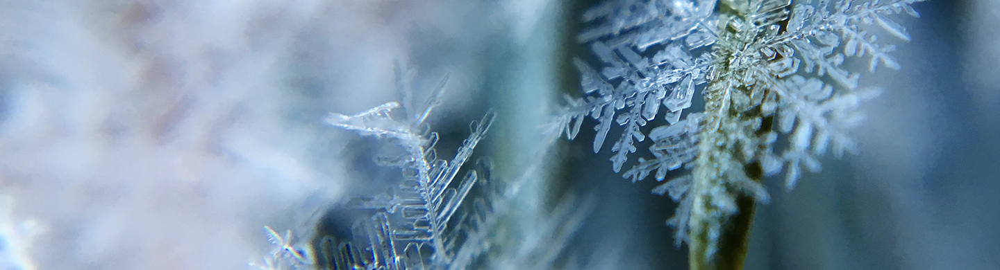
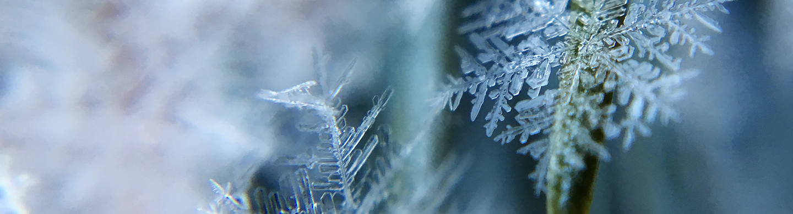

VIRTUAL | CEW+Inspire Midweek Mindfulness Guided Sit, March 19, 2025
Date: March 19, 2025 | Time: 12:15 pm - 12:45 pm | Location: Virtual
At CEW+, we navigate circumstantial barriers by providing academic, financial, and professional support to help you reach your personal potential. Established to support women through higher education, we lift up women and all underserved communities at U-M and beyond. Through career and education counseling, funding, workshops, events, and a diverse, welcoming community, we exist to empower. We are CEW+, and we’re here to help you reach your potential.
Learn More About CEW+
Date: March 19, 2025 | Time: 12:15 pm - 12:45 pm | Location: Virtual
Date: March 19, 2025 | Time: 2:00 pm - 3:30 pm | Location: Virtual via Zoom

Date: March 20, 2025 | Time: 12:30 pm - 1:30 pm | Location: Virtual via Zoom

Date: March 20, 2025 | Time: 4:00 pm - 5:30 pm | Location: North Quad, Space 2435

APPLY NOW! Each year the Twink Frey Visiting Social Activist (TFVSA) Program brings to CEW+ a social justice activist whose work affects women and recognizes gender equity issues...
CEW+ FELLOWSHIP APPLICATIONS DUE MARCH 11, 2025...
HAPPY GIVING TUESDAY 2024! Today, the University of Michigan will join thousands of organizations from across the world by participating in Giving Tuesday...